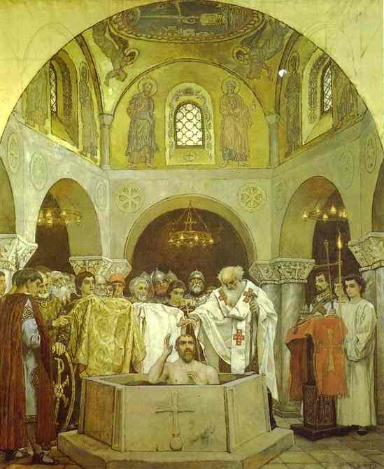
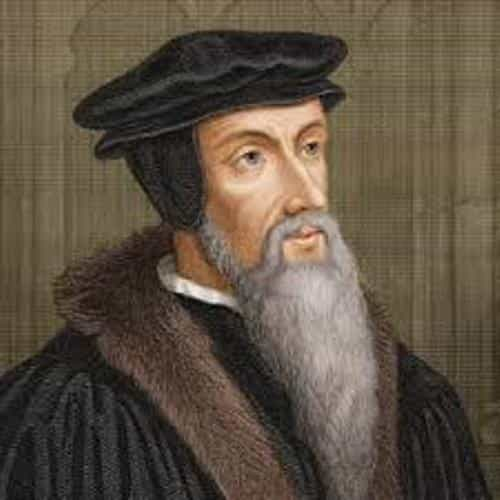
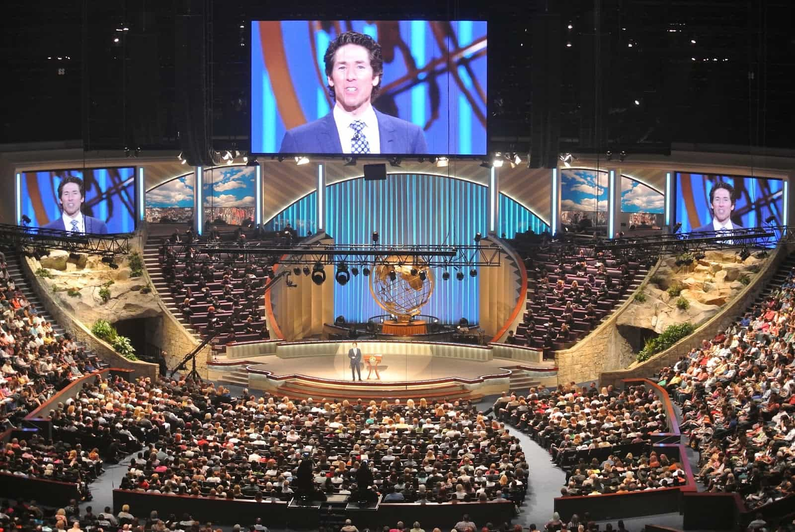
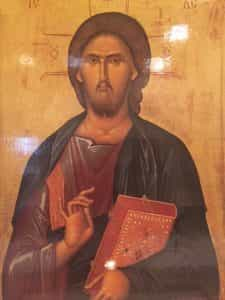
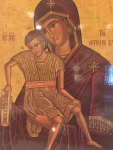

In the year 987, Vladimir the Great (later St. Vladimir of Kiev), a then pagan ruler of the Kievan Rus’, sent emissaries to various neighboring nations to study their religions. He was especially interested in the Greeks. The Greeks had preached to him about the history of the world from its beginning. They told him of another world, and if he accepted their religion, that he could die and then live forever. But if he accepted the other religions, that he would die and burn in fire.

Of the Bulgars on the Volga, his emissaries described how they worshiped in their temple, called a mosque, in an undisciplined fashion. They described how the Bulgarians stood ungirt, bowed, sat down, and looked all around like men possessed. They went on to report that there was no happiness found among them, but instead only sorrow and a foul stench.
Vladimir rejected Judaism as the Jews had lost Jerusalem. He concluded that their God had forsaken them.
His emissaries then went among the pre-Schism Latin Rite churches of the Germans. They reported to Vladimir that they beheld no glory there, and that their churches were cold and gray, and their services were boring.
They went on to the Greek Byzantine church in Constantinople. There they were taken to Divine Liturgy in the great Hagia Sophia. Then they delivered their report to Vladimir.
The Greeks led us to the edifices where they worship their God, and we knew not whether we were in heaven or on earth. For on earth there is no such splendor or such beauty, and we are at a loss of how to describe it. We know only that God dwells there among men, and their service is fairer than the ceremonies of other nations. For we cannot forget that beauty.
Thus began the Christianization of Vladimir the Great and the Eastern Slavs.
My Journey Begins
Sixty years ago, I was born into Evangelical Protestantism. I grew up in Independent Baptist and Southern Baptist churches. At a young age, I said the sinner’s prayer and accepted Jesus Christ as my personal lord and savior. Later in my teens, I received believer’s baptism and was baptized by immersion. Despite the expository sermons, and the puritanical hymns, I wanted something deeper.
As I grew up, I began to question my faith, tradition, and its teachings. Why did just a simple prayer grant me a get-out-of-hell-free card? Why did the church suddenly disappear after the deaths of the apostles, but then resurfaced in Northern Europe in the sixteenth century? Why was Sola scriptura the battle cry, yet I saw idolatrous book worship, and everyone and anyone interpreting scriptures as they saw fit? Why were there tens of thousands of Johnny-come-lately denominations, all claiming a corner on the truth? The questions went on and on.
The Frozen Chosen
After leaving the Baptists, my journey took me into the Reformed Church tradition. I learned all about the Five Points of Calvinism, or the TULIP, but I still believed in free will. I could choose to accept God’s grace, or reject it. I started to doubt how God could “elect” me, or choose me, while damning others to an eternity separate from him.

Happy Clappy
I decided to look at non-denominations in the form of Mega Churches that consisted of irreverent praise and worship music, rock bands, skits, big screen televisions, endless announcements, watered down seeker sensitive sermons, and altar calls left me with nagging doubts.
I saw Mega Churches springing up like weeds. Their shelf lives were short. Attendees were frequently jumping ship for even more hip pastors, more stylized worship, and better entertainment.

My Journey Concludes
I finally stopped attending church altogether, but as St. Cyprian of Carthage said, “A man cannot have God as his Father if he does not have the Church as his Mother”.

I started to become familiar with the teachings of the early Church Fathers. I began to clearly see that the early Christians believed and worshiped much differently.
Then late in life, I made the decision to “Cross the Bosporus”. I was accepted as a catechumen, and I was eventually Chrismated into the Holy Orthodox Church. I had reached the final stop on my journey at the Church of Peter and Paul.
Today, I am a member of an Antiochian Orthodox Church (Greek Church of Antioch). Liturgy is in English, Arabic, and Greek. The church is Eastern Rite, or Byzantine Rite. The exotic beauty of the ancient liturgy, the iconography, the mysticism, chanting, the permanence of tradition, divine union with an eternal and unchanging God, and worshiping with the eyes of the soul (Nous) are totally different from the worship of emotionalism and teaching of my Evangelical Protestant roots.
Orthodox means right belief. I know that I am not rolling out of bed on Sunday to hear social justice sermons, political correctness, or Heterodox fads.
Conclusion
Despite my rejection of my Evangelical Protestant faith tradition, I am eternally grateful for the moral and Godly upbringing I received from it. In an age of moral relativism, such a heritage is priceless.
I recently entered Minor Orders. I am currently an Acolyte, and I serve at altar. Now an older man, in what years I have remaining, I have resolved to live a pious life and serve the lord. Jobs, materialism, or the endless pursuit of pleasure pale when compared to final judgement before God and eternity. “For what shall it profit a man if he gains the world, and loses his own soul?” (Mark 8:36).
Like the tenth century pagans, I too am “at a loss of how to describe it”. But like them, I saw that “God dwells there among men” in the Church of the Apostles.
Read More: ROK Undercover: What It’s Like To Attend An Eastern Orthodox Church Service